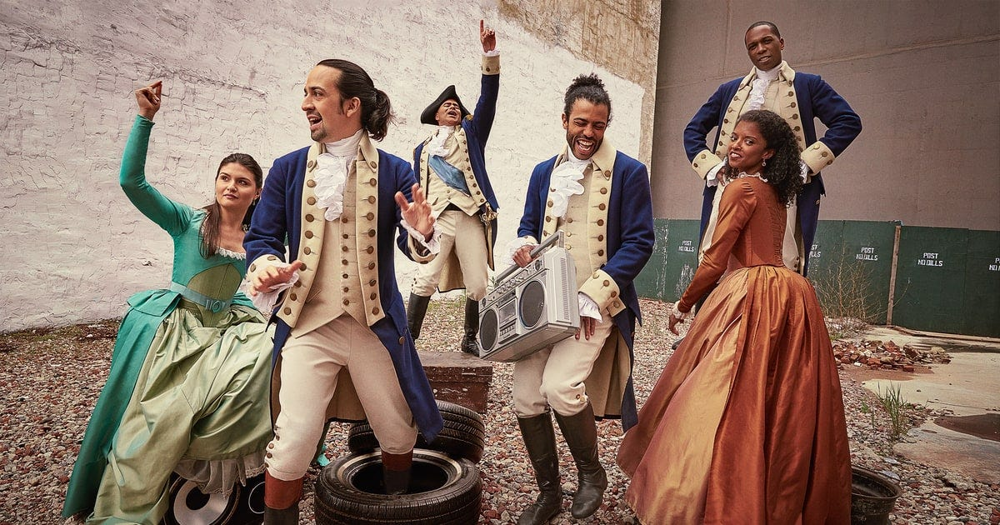
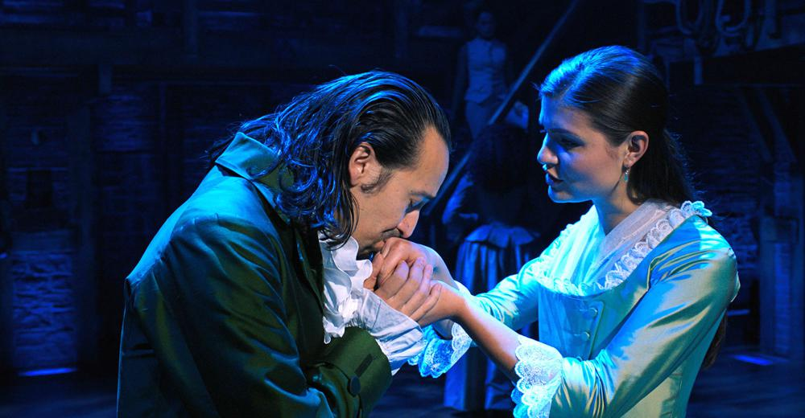

Soundtrack
Spotify Playlist (including Remixes & Mixtapes): Best of Hamilton Spotify Playlist
Script: Hamilton Script
Act I
Act I focuses on Alexander Hamilton's struggle to rise above his background and status through the American Revolution as George Washington's main aide-de-camp. With his arrival in New York, Hamilton first meets Aaron Burr, John Laurens, Marquis de Lafayette, and Hercules Mulligan. The five men quickly become close friends with their similar goals in the revolution and the abolition of slavery. Hamilton then meets and enchants Elizabeth Schuyler, second daughter of wealthy Philip Schuyler, and gains the support and backing of her family. Through his achievements and efforts in the reovlution, he gains recognition and rises to the position of Washington's right-hand man. Washington, being fond of Hamilton while considering Elizabeth's worries, is initially reserved about granting Hamilton command of a battalion. However, at the final Battle of Yorktown, Hamilton returns and, leading together with Marquis de Lafayette, secures victory and independence.
Act II
Act II focuses on Alexander Hamilton's struggle to maintain his reputation and personal relationships while fighting for approval for his financial plan. In Act II, Aaron Burr's narration becomes untrustworthy as his relationship with Hamilton begins to worsen. While both are orphans with a desire for power and status, Hamilton, from an impoverished background, always takes his shot---he openly shares his opinions without restraint and is willing to take risks---while Burr, from a more privileged and wealthy background, waits for it---he prefers to observe and protect himself and his reputation than take action. After the end of the revolution, both Alexander Hamilton and Aaron Burr work as lawyers. Although they both start their career at the same time, Alexander Hamilton quickly gains popularity and becomes George Washington's Secretary of the Treasury. With this role, he enters the battles of the political world as he tries to gain approval for his financial plan, which Thomas Jefferson and James Madison heavily oppose. Hamilton, exhausted and unable to spend time with his wife, Elizabeth Schuyler and Angelica Schuyler, becomes enticed by Maria Reynolds and enters an affair. When Thomas Jefferson, James Madison, and Aaron Burr become aware of this affair, Hamilton, fearing that they would use the affair and his payments to James Reynolds, Maria Reynolds's husband, against him, writes the Reynolds Pamphlet to preserve his reputation. The Reynolds Pamphlet essentially ends his chances for the presidential role and results in the death of his son, Philip Hamilton, who dies in a duel in order to defend Hamilton's name. However, Hamilton continues to rise in power as he gains unprecendented financial power as he, Thomas Jefferson, and James Madison, come to a compromise. Burr, becoming envious of Hamilton, begins to desire action. Burr's political career reaches his peak as he goes against Thomas Jefferson for the presidential role. Although he is initially sure of his victory, Burr ultimately loses as Hamilton endorses Jefferson, Hamilton's political enemy, instead of him. Burr challenges Hamilton to a duel, where Burr takes his shot while Hamilton, pointing his gun towards the sky, waits for it.
***Note: A "Reprise" is a piece of music that is repeated within a musical. In Hamilton, reprises are two separate pieces with the same name.